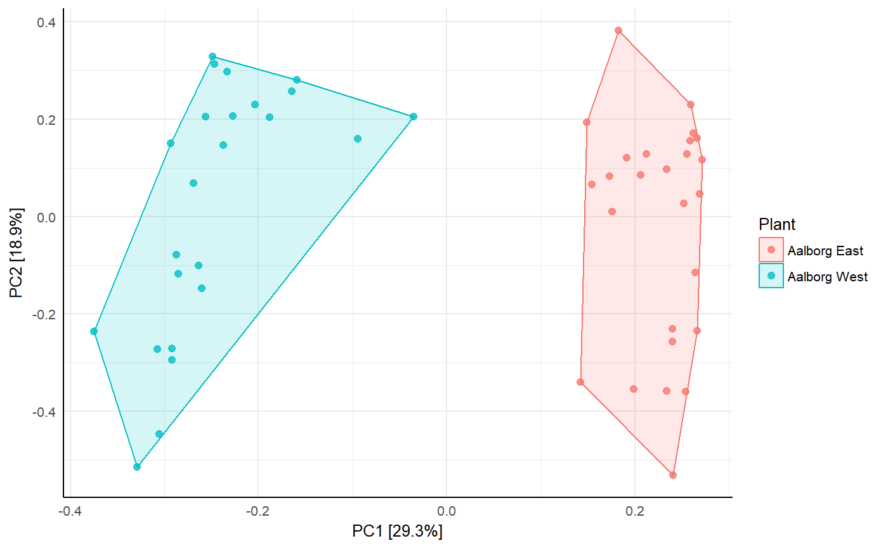

A wrapper around the vegan package to generate ggplot2 ordination plots suited for analysis and comparison of microbial communities. Simply choose an ordination type and a plot is returned.
amp_ordinate(data, type = "", transform = "", distmeasure = "", constrain = "")
| data | (required) Data list as loaded with |
|---|---|
| filter_species | Remove low abundant OTU's across all samples below this threshold in percent. Setting this to 0 may drastically increase computation time. (default: |
| type | (required) Type of ordination method. One of:
Note that PCoA is not performed by the vegan package, but the |
| distmeasure | (required for nMDS and PCoA) Distance measure used for the distance-based ordination methods (nMDS and PCoA), choose one of the following: |
| transform | (recommended) Transforms the abundances before ordination, choose one of the following: |
| constrain | (required for RDA and CCA) Variable(s) in the metadata for constrained analyses (RDA and CCA). Multiple variables can be provided by a vector, fx |
| x_axis | Which axis from the ordination results to plot as the first axis. Have a look at the |
| y_axis | Which axis from the ordination results to plot as the second axis. Have a look at the |
| sample_color_by | Color sample points by a variable in the metadata. |
| sample_color_order | Order the colors in |
| sample_shape_by | Shape sample points by a variable in the metadata. |
| sample_colorframe | (logical) Frame the points with a polygon colored by the sample_color_by argument or not. (default: |
| sample_colorframe_label | Label by a variable in the metadata. |
| sample_label_by | Label sample points by a variable in the metadata. |
| sample_label_size | Sample labels text size. (default: |
| sample_label_segment_color | Sample labels repel-segment color. (default: |
| sample_trajectory | Make a trajectory between sample points by a variable in the metadata. |
| sample_trajectory_group | Make a trajectory between sample points by the |
| sample_plotly | Enable interactive sample points so that they can be hovered to show additional information from the metadata. Provide a vector of the variables to show or |
| species_plot | (logical) Plot species points or not. (default: |
| species_nlabels | Number of the most extreme species labels to plot (Only makes sense with PCA/RDA). |
| species_label_taxonomy | Taxonomic level by which to label the species points. (default: |
| species_label_size | Size of the species text labels. (default: |
| species_label_color | Color of the species text labels. (default: |
| species_rescale | (logical) Rescale species points or not. Basically they will be multiplied by 0.8, for visual convenience only. (default: |
| species_size | Size of the species points. (default: |
| species_shape | The shape of the species points, fx |
| species_plotly | (logical) Enable interactive species points so that they can be hovered to show complete taxonomic information. (default: |
| envfit_factor | A vector of categorical environmental variables from the metadata to fit onto the ordination plot. See details in |
| envfit_numeric | A vector of numerical environmental variables from the metadata to fit arrows onto the ordination plot. The lengths of the arrows are scaled by significance. See details in |
| envfit_signif_level | The significance threshold for displaying the results of |
| envfit_textsize | Size of the envfit text on the plot. (default: |
| envfit_color | Color of the envfit text on the plot. (default: |
| envfit_numeric_arrows_scale | Scale the size of the numeric arrows. (default: |
| envfit_show | (logical) Show the results on the plot or not. (default: |
| repel_labels | (logical) Repel all labels to prevent cluttering of the plot. (default: |
| opacity | Opacity of all plotted points and sample_colorframe. |
| tax_empty | How to show OTUs without taxonomic information. One of the following:
|
| detailed_output | (logical) Return additional details or not (model, scores, inputmatrix, screeplot etc). If |
| ... | Pass additional arguments to the vegan ordination functions, fx the |
A ggplot2 object. If detailed_output = TRUE a list with a ggplot2 object and additional data.
The amp_ordinate() function is mainly based on two packages; vegan-package, which performs the actual ordination, and ggplot2-package to generate the plot.
GUide to STatistical Analysis in Microbial Ecology (GUSTA ME): https://mb3is.megx.net/gustame
Legendre, Pierre & Legendre, Louis (2012). Numerical Ecology. Elsevier Science. ISBN: 9780444538680
Legendre, P., & Gallagher, E. (2001). Ecologically meaningful transformations for ordination of species data. Oecologia, 129(2), 271-280. http://doi.org/10.1007/s004420100716
#Load example data data("AalborgWWTPs") #PCA with data transformation, colored by WWTP amp_ordinate(AalborgWWTPs, type = "PCA", transform = "hellinger", sample_color_by = "Plant", sample_colorframe = TRUE )# NOT RUN { #Interactive CCA with data transformation constrained to seasonal period amp_ordinate(AalborgWWTPs, type = "CCA", transform = "Hellinger", constrain = "Period", sample_color_by = "Period", sample_colorframe = TRUE, sample_colorframe_label = "Period", sample_plotly = "all" ) # }